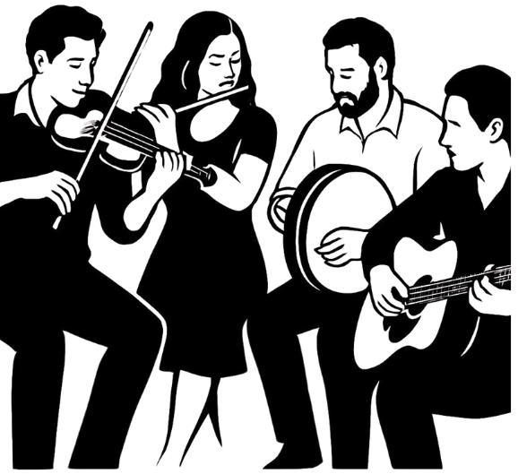

Optional day two
Keep Celebrating
A Traditional Irish Session

Join us at Molly Mc’s (96 Isabella St, London SE1 8DD) for a traditional Irish music session, any time between 3:00–6:00 PM. View the food menu.
This is entirely optional — whether you join us or not, we hope you enjoy the rest of your weekend in London!
Staying in London?
A few of our favourite places, tips, and tricks for making the most of the city.
Bars, Cocktails & Live Music
Waxy O’Connor’s, Chinatown — A massive underground Irish bar with four bars. Great for drinks and live music.
Ain’t Nothin’ But, Carnaby — An intimate blues bar with brilliant live blues and jazz music from 6:00 PM.
Swift, Soho (or Borough) — Beautiful cocktails… but our favourite is an Irish coffee if you’re nursing the post-wedding hangover.
Bar Italia, Soho — A Soho institution and our pick for the best coffees and espresso martinis. Open until the early hours, too.
Cocktail Trading Company, Shoreditch — Raph’s second home. Theatrical cocktails served in a cosy bar just off Brick Lane.
Ku Bar, Chinatown — Our favourite LGBTQ+ bar, right in the heart of Chinatown. Open late, with drag shows, and a club downstairs if you fancy carrying on into the night.
Arts Theatre Club, Soho — A cosy, late-night, members’-club-style cocktail bar with DJs, dancing and plenty of atmosphere.
Jaguar Shoes, Shoreditch — A lively East London bar, music and arts space that keeps going late.
Secret London
Cahoots, Soho — A 1940s-inspired cocktail bar hidden inside a disused Underground station. Great fun and very London.
Opium, Chinatown — Hidden behind an unassuming doorway on Gerrard Street, with atmospheric rooms, inventive cocktails and delicious dim sum.
Murder Inc., Fitzrovia — A dark, playful cocktail bar inspired by the criminal underworld of 1920s America.
The Vault, Soho — Enter through Milroy’s whisky shop on Greek Street, then find the bookcase at the back that leads into the hidden cocktail bar.
La Bodega Negra, Soho — The screaming neon signage outside promises peep shows and girls, girls, girls. What you’ll actually find is tacos, tacos, tacos… with a side of tequila, of course.
Basement Sate, Soho — Look for the discreet red door in the middle of Soho. Behind it, you’ll find an intimate basement bar specialising in cocktails.
Take in a Show
You’ll be within easy reach of London’s West End, home to everything from long-running musicals and new plays to comedy, jazz and cabaret.
Theatre — Download the TodayTix app and look out for Rush tickets. Discounted tickets for participating shows are released daily at 10:00 AM on a first-come, first-served basis, so you can often secure seats for that evening at a fraction of the usual price. Just be sure to be on the app and ready to purchase right at 10:00 AM.
Top Secret Comedy Club, Covent Garden — An intimate comedy club hosting established names alongside some of London’s best up-and-coming comedians.
Leicester Square Theatre — A smaller, lesser-known West End venue with a varied programme of comedy, theatre, cabaret and live entertainment.
Shakespeare’s Globe — Watch Shakespeare performed beside the Thames, with affordable standing tickets available for those happy to experience it as a traditional “groundling.”
Jazz & Cabaret
Ronnie Scott’s, Soho — One of the world’s most famous jazz clubs, hosting exceptional live music in an intimate setting since 1959.
Phoenix Arts Club, Soho — A cabaret venue hidden beneath the Phoenix Theatre, with live music, comedy and late-night performances.
Crazy Coqs, Piccadilly Circus — Our wedding reception venue is also one of London’s most beautiful intimate performance spaces, with a programme of jazz, cabaret, comedy and live music.
A Little London Adventure
Borough Market & the South Bank — Pick up something delicious at one of London’s best-known food markets, then walk along the Thames towards Shakespeare’s Globe and Tate Modern. Borough Market is particularly special to us, as we first met nearby in a bar called The Globe Tavern.
Maltby Street Market — A smaller neighbourhood food market beneath the railway arches near London Bridge.
Bermondsey Street — Loads of great cafés, restaurants, bars and galleries all on one street. Check out Morocco Bound for local music and events.
Brick Lane Markets — Browse vintage clothes, independent stalls, street art and food from around the world. Brick Lane is also famous for its many curry houses.
The V&A, South Kensington — Aisling’s favourite museum, filled with art, fashion, design and decorative treasures from around the world.
London Museum Docklands — Set inside a historic warehouse at West India Quay, this brilliant museum tells the story of London, its river and its docks. As we live off one of the old docks, this one is a particular favourite of ours.
Sky Garden — Panoramic views across London without the price tag. Entry is free, but tickets need to be reserved.
A Thames Boat Ride — Take an Uber Boat rather than a sightseeing cruise for brilliant views of London from the river. If you find yourself on one, send us a message — we live right off Greenland Dock!
Neal’s Yard & Seven Dials Market — Colourful streets, independent shops and plenty of lovely places to stop for coffee or a drink.
A Few London Tips
Use contactless payment or Apple Pay / Google Pay on the Tube and buses — there’s no need to buy an Oyster card.
Walk when you can; many central London landmarks are much closer together than they appear on the Tube map.
Remember to stand on the right-hand side of the escalator on the Tube — the left is for walking!
Always carry an umbrella. London likes to keep us guessing.
We hope you enjoy your time in the city where we met, fell in love and (soon-to-be) got married. We love this city, and we hope you do too.